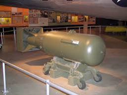

Numero 6
Mark 14

Bomba termonuclear experimental dos EUA. Ela foi criada na década de 1950. E possuía um potencial de 6,9 MT (megatons)
Little Boy
O alvo era Hiroshima, cidade japonesa de 256 mil habitantes. Às 8h15 de 6 de agosto de 1945, a bomba denominada Little Boy, com 72 quilos de urânio 235, foi lançada sobre a cidade, a mais de 10 mil metros de altura.
Mark 14
Bomba termonuclear experimental dos EUA. Ela foi criada na década de 1950. E possuía um potencial de 6,9 MT (megatons)
Ivy Mike H-Bomb

É inacreditável, mas esta bomba, usada em testes em 1951, era equivalente a 700 vezes a bomba jogada em Hiroshima.
TX-21 “Shrimp”
Esta bomba foi testada em 1954. A força de detonação atingiu 14.8 MT. E, a saber, sua radiação se espalhou por 11 mil km² das Ilhas Marshall até a Ásia, Austrália, EUA e Europa.
Tsar Bomb

Agora a pior de todas, a bomba mais poderosa e temida do mundo. Ela era termonuclear – RDS 220 ou AN602 -e foi testada pela União Soviética em 1961. Sua força equivalia a 3,8 mil bombas de Hiroshima. Com capacidade de 50 MT.
Gordoshima e Negrozaki

Gordoshima e Negrozaki são uma bomba nuclear se caso esses dois elementos forem unificados. O mundo pode ficar cheio de narcotraficantes caso esses dois elementos sejam compactados no mesmo espaço.
The Bafian

Com seu fulminante bafo ele aniquilou mais de 30 milhões de pessoas. Ele tem uma tecnologia B-k(Bafo's kill), o que faz dele uma bomba nuclear ultra eficiente. A tecnologia B-k faz com que as pessoas que se aproximem tenham uma morte rapida e muito dolorosa. Ademais disso emite uma grande radiação de cheiro de Gamba.
Ademais dessas coisas que essa coisa faz, a coisa acarreta a serios problemas ex: 387 tipos de tumores de todo tipo, todos os tipos de cancêr, disfunção eretil desfunção cerebral, pode causar microencefalia, calvice. E se por algum acaso se alguem se reproduzir com a criatura o filho nascera igual a The Bafian, sendo capaz de transimitir as mesmas doenças que a criatura dos infernos.